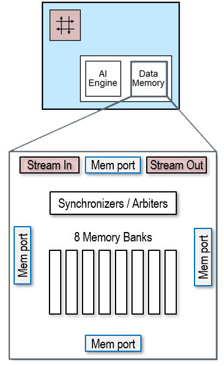

Ryzen AI column architecture and tiles¶
Goals¶
Understand the NPU column architecture
View the previous example as a dataflow diagram and see how it can map to an NPU column
Introduction to the AI Engine processors in compute tiles
Learn about the features and capabilities of compute, memory and interface tiles
Understand the capabilities of the Ryzen AI NPU data movers
References¶
NPU column architecture¶
The NPU is a 2D array of tiles that can be grouped into columns.
Ryzen AI NPU Column
A column consists of:
Compute tiles (four per column)
where the computation happens
Memory tile (one per column)
shared storage for reusable data, such as weights or bias
Interface tile (one per column)
gateway to system memory, external to the NPU
We saw in section 1 that the only external connections the NPU has are to external memory. It does not access any system peripherals directly, such as a webcam. It receives all its inputs from external memory and writes all its outputs to the same memory. The main x86 CPU is responsible for providing input data in external memory for the NPU, and reading the NPU results in external memory. The NPU uses interfaces tiles to access external memory. Therefore, every NPU application must use at least one interface tile.
Interfaces tiles are arranged at the bottom of an NPU column. For this reason, we typically group the resources of the NPU in columns and assign applications to one or more columns. An application built for one column can run on any of the other columns with the same resources.
Color Threshold dataflow graph¶
Returning to the color threshold example; this is one of the simplest examples we can build for the Ryzen AI NPU. Its dataflow graph and the corresponding mapping to the NPU column are shown below. (Dataflow graphs were introduced in the Riallto overview video) in section 1. As a reminder, a dataflow graph is a graphical representation of a computation or a workflow, where nodes represent operations or tasks, and edges or connections between nodes represent the flow of data between these operations.
The color threshold example’s dataflow graph has a single node connected via memory buffers to its input and output. In general, each node in a dataflow graph is associated with one or more programs or subprograms that it will execute for a given application to run successfully. The programs are referred to throughout these notebooks as software kernels or simply kernels. The color threshold application has one node and one kernel.

Color threshold dataflow graph
Dataflow graphs are incredibly useful in many areas to describe parallel computer applications, such as parallel computing, digital signal processing and machine learning among others. Dataflow graphs allow us to identify potential bottlenecks, parallelize operations, and optimize the overall performance of a system. The extraction of parallelism is relatively straightforward, as each compute node operates independently.
Mapping the dataflow graph to the NPU¶
In the color threshold example, the video data enters and leaves the array via the interface tile and all the processing is done by a single kernel. This kernel will run on one compute tile. This could be any one of the twenty compute tiles available in the array. In the graphic below, you can see the kernel is assigned to the compute tile at the bottom of a column.

Color threshold mapped to a section of the Ryzen AI NPU
For now, we are only showing the interface tile, memory tile, and the compute tile at the bottom of the column. The other three compute tiles in the column are not used in this example and are not shown.
As the threshold kernel is relatively simple and operates on one pixel at a time, the pixels can be transferred as a stream from the interface tile to the compute tile, bypassing the memory tile. The memory tile and the three remaining compute tiles in the column are unused.
Note that the stream switch in the memory tile is only used in this example to pass data from the interface tile to the compute tile.
Now that we’ve see how applications can map to NPU tiles, we will look at the properties of the NPU. Before reviewing each tile in more detail, we will first consider the data movers which are found in every tile.
Data Movers overview¶
Data movers definition¶
Data movers are among the most important components of the NPU architecture. So, what exactly is a data mover?
Data movers are dedicated hardware blocks, that are responsible for the efficient transfer and marshalling of data in the NPU. Data movers implement advanced data indexing schemes, referred to as multi-dimensional data movement patterns, which are critical for AI/ML algorithms. They are programmable blocks whose operations are controlled via data structures called buffer descriptors.
Each tile has two independent types of data movers, one to convert from streams to memory (S2MM) and another to convert from memory to stream (MM2S). These data movers are connected to the stream interconnect via stream channels of 32-bit each.
Buffer descriptors¶
A data transfer is defined by a buffer descriptor (BD). Buffer descriptors contain all the information to produce a data transfer operation and can also point to the next BD to continue data transfer after the current transfer is complete. You will see more on buffer descriptors in section 4 when developing custom applications.
Ubiquitous¶
Multiple data movers are present in every compute, memory and interface tile of an NPU array. There are two data movers in each direction in the compute and interface tiles. There are six data movers in each direction in the memory tile. Memory tiles have more data movers as their main function in the NPU is to move data efficiently between interface and compute tiles.
Link terminators¶
Every stream connection is terminated at its source tile and destination tile by a data mover. The source data mover serializes the information, whereas the destination data mover de-serializes the information.
Array-wide access¶
Every tile has a stream switch and sets of data movers which allow it to move data anywhere on its array.
Ryzen AI NPU Streaming network - move data from any tile to any tile
Sophisticated multi-dimensional data movement¶
The data movers in all tile types can access memory using 3-dimensional address generators, in other words you have 3 indices to access data. In addition to this, the data movers in the memory tiles can access data using 4-dimensional address generators or 4 indices. Again, this further emphasizes the main “data movement” function of the memory tiles.
Statically-defined, data “push architecture”¶
In contrast to cache-based architectures (e.g., x86 CPUs), the NPU’s data movers are key to realizing its data “push architecture”. The data transfer traffic and connections are defined at compilation time, guaranteeing determinism.
In the color threshold example, the interface tile moves data to the compute tile using data movers and the streaming interconnect.
Data movers are ubiquitous and provide efficient data transfer throughout the Ryzen AI NPU array.
Compute Tile properties¶
Inside a compute tile is the processor core that we call the AI Engine (AIE). These processor cores are not general-purpose processors. Instead, they are optimized for machine learning computation such as matrix multiplication and accumulation.
Each compute tile has an AI Engine processor, data memory, connections to its nearest neighboring compute tiles (blue lines), access to a network of streaming connections that traverse the NPU (red lines) and data movers (data movers not shown) which are used to send and receive data on the streaming network.
Compute Tile
AI Engine¶
An AI Engine is a processor that has been optimized for Machine Learning and DSP workloads. Compared to a modern x86 desktop processor each AI Engine is much smaller, and more efficient when carrying out Machine Learning operations (matrix multiply, multiply and accumulate). These optimizations reduce power consumption, for a laptop this means enhanced AI functionality while maintaining a long battery life.
AMD has different variants of the AI Engine processors. Ryzen AI uses the AIE-ML variant, optimized for AI computation.
The AIE-ML is a Single Instruction Multiple Data (SIMD) and Very Long Instruction Word (VLIW) processor that supports both fixed-point and floating-point precision using specialized hardware.
In addition to the Data Memory, the AIE-ML has a local 16KB of program memory that is used to store the VLIW instructions.

AIE-ML Architecture
No interrupts¶
Unlike control flow CPUs, the AI Engines in the compute tiles do not have interrupts as they are not required in a dataflow architecture. The absence of the variable latencies arising from interrupt response times dramatically improves the real time performance and determinism of kernels running on AI Engines.
Multiple kernels per tile¶
In the color threshold example, a single kernel is running on the compute tile. Compute tiles can run one or more kernels. Programs instructions run sequentially on the AIE, so if multiple software kernels are assigned to an AIE the kernels will run sequentially. However, the kernel instructions can take advantage of the VLIW and SIMD capabilities of the AIE.
Vector Processing Units¶
SIMD¶
The vector processor enables fine-grain level parallelism with its Single Instruction Multiple Data (SIMD) operations. In SIMD architectures, a single instruction can process multiple pieces of data simultaneously.
There are two independent SIMD vector processors in the AI Engine, one for fixed-point and another for floating-point number formats, although only one can be used per clock cycle. The vector processor units supports a variety of number formats and operations.
24x 256-bit wide vector registers and 32x 256-bit wide accumulator registers are available for SIMD. There are dedicated vector accumulator registers to carry out multiply accumulate operations (MACs). This operation is extremely common in ML layers such as convolution. Having dedicated support for multiply accumulate operation saves data movement, thus higher efficiency.
VLIW¶
Very Long Instruction Word (VLIW) architectures bundle multiple operations into long instruction words, which are then executed in parallel. The AI Engine supports up to 6 operations that can be executed in parallel: two loads and one store from data memory, one scalar operation, one vector operation and one register move. This means that while data is being fetched or stored from data memory, the vector processor can process other data. The vector processor can produce 64, 32 or 16 output lanes.
As an example, an AIE can achieve 512 MAC/cycle when operating using int4 x int8 number formats. The NPU and hence each AIE is clocked at 1 GHz which means that each core can achieve 512 int4 x int8 GMAC per second.
Scalar unit¶
The scalar processor has a scalar arithmetic unit that supports basic add/subtract, compare, multiply and move. The scalar unit is not intended for high performance computation and in general is used to manage program control flow.
Supported number formats¶
The AI Engine supports a variety of number formats, the table below shows the supported (real) number formats and the performance they achieve in MAC/cycle.
Operand 1 |
Operand 2 |
MAC/cycle |
|---|---|---|
int8 |
int4 |
512 |
int8 |
int8 |
256 |
int16 |
int8 |
128 |
int16 |
int16 |
64 |
bfloat16 |
bfloat16 |
128 |
bfloat16 is commonly used in machine learning and more recently int4 is gaining adoption.
Please, refer to the Architecture Manual to find out more details about supported number formats (both real and complex).
Data memory¶
The compute tile includes its own dedicated high-speed 64KB data memory. The vector processor can also access the data memory of neighboring compute tiles (north, south and west), amounting for 256KB of memory, accessed as one contiguous memory. Additionally, the compute tile has two stream-to-memory and two memory-to-stream interfaces to move data in and out from/to non-neighboring tiles.

Compute Tile - data memory
No cache¶
Unlike, traditional CPU architectures. There is no cache in the processor or in the array. This allows deterministic and low latency processing, which benefits real-time processing and overall system performance. Caches typically carry a high silicon and power consumption cost.
The data memory in a compute tile can be accessed by its own vector processor, the compute tile in the north, south and east. This capability is complemented by the data movers to move data from non-neighboring tiles.
Neighboring data communication enhanced with data movers enables efficient data movement in the NPU.
Memory banks¶
Each compute tile features 64KB high-speed random-access memory, a total of 8 physical banks, organized into 4 logical banks of 16 KB each.
These memory banks can be accessed by neighboring compute tiles (north, south and east) and the data movers. Each memory bank has built-in memory arbitration and synchronization to manage request from many different sources.
This local memory is accessed by the kernels to perform the computation. A 64KB memory may seem small, however, it is enough for data flow applications, where the movement of data is implicit.
Compute tile Data movers¶
Compute tiles have data movers that complement the nearest neighbor interfaces to move allow data to be moved from the compute tile to anywhere in the array.
Each compute tile has 4 data movers. 2 data movers are associated with input data streams and 2 are associated with output data streams.
Compute tile data moving performance¶
Each AI Engine is capable of 2x 256-bit load and 1x 256-bit store operation per cycle to its own local data memory or to the data memories of its neighboring compute tiles.
Each data mover (there are two in each direction) within the compute tile can perform 2x 32-bit load/store per cycle.
Communication |
Load |
Store |
|---|---|---|
Neighboring |
512-bits/cycle |
256-bits/cycle |
Non-neighboring |
64-bits/cycle |
64-bits/cycle |
Where possible, using shared memories between neighboring tiles will give the highest performance. Non-neighboring tiles will have to use data movers to transfer data. Data movers will also be used to multicast or broadcast data from one to many tiles.
Note that, each hop through a stream interconnect adds a few cycles of latency. Tiles far away from each other will have higher latency for data transfers. In a column of four compute tiles, or and array with 20 tiles, this is not a significant consideration.
Scaling performance¶
In the previous section we mentioned two levels of parallelism in the compute tile:
Instruction level parallelism with VLIW
Data level parallelism with SIMD
As each compute tile operates independently, multi-core is a third level of parallelism. Tiles in the NPU array are connected vertically and horizontally allowing multiple compute tiles to be assigned to an application to scale up the performance.
The Ryzen AI NPU has 20 compute tile and can achieve a combined 20 int4 TOPs.
Memory Tile properties¶
The memory tile is a 512KB high-speed random-access memory that complements the data memory on the compute tile.

Memory Tile
The memory tile has 16 memory banks of 32KB each, which gives a bandwidth of up to 30 GB/s read and 30 GB/s write in parallel per memory tile. Each bank allows one read or one write every cycle.
The memory tile has 6x stream to memory and 6x memory to stream data movers to move data anywhere in the array. These data movers also can access data in the neighbor memory tile (west and east). In addition, the data movers support 4-dimension address generation, zero-padding insertion, and compression.
One example use case of the memory tile is to store and move data that is highly reusable, for instance activations and/or weights in a ML layer. Depending on the characteristics of the ML applications and bandwidth requirement, the AIE-ML data movement architecture supports different dataflow mappings where either the activations and/or the weights are stored in the AIE-ML memory tiles.
In addition to storing reusable data, we can use the memory tile to split (partition) data to achieve data level parallel implementations.
The memory tile complements the data memory to achieve better dataflow mappings.
Interface Tile properties¶
The interface tile is responsible for moving data into and out of the array, to and from external memory. They can read data from external memory put it onto a stream interface to send to a memory or compute tile, or broadcast or multicast to several locations simultaneously. (Broadcast in this case means sending to all, Multicast means sending to selected group of tiles.) The interface tiles take data from the streaming network, potentially coming from multiple tiles, and writes it back to the main system memory, aggregating the data if necessary.
Interface Tile
Each interface tile has 2 input and 2 output data movers. The data movers’ job is to manage the movement of data from one location to another. This may involve reading chunks of data and segmenting them before forwarding to the destination.
The interface tile data movers also support compression when the data is sparse. This is where they may be many zeros in the data stream. Rather than send lots of zeros, the data mover can effectively encode the stream of data (compress it) to make more efficient use of the interface bandwidth. The data will be decompressed once it reaches its destination.
Not shown, the interface tile also includes synchronization mechanisms to manage memory access.
The number of interfaces tiles in an array is an indication of the number of parallel streams the array can support simultaneously. The Ryzen AI NPU has 4 interface tiles and can therefore support 4 data streams or applications. Note that column zero in the array (left most) does not contain an interface tile.

Interface tiles
Gateways to system memory¶
It is important to understand that the Ryzen AI NPU interacts with the rest of your laptop via the system memory. The interface tiles are the input and output ‘gateways’ between the NPU and system memory.
4 data movers per interface tile¶
Each interface tile has the same number of data movers (4) and the same type as the compute tiles. Two data movers are associated with input data streams and two are associated with output data streams.
Leftmost column is different¶
In the Ryzen AI NPU, every column typically has 1 interface tile. We say ‘typically’ because the leftmost column does not have an interface tile, as shown below. This “irregularity” is a silicon implementation detail we have ignored until now and can continue to ignore for the remainder of this tutorial. You can see this asymmetry in the image below. The two leftmost columns of compute and memory tiles can be used as a group with the single interface tile at the bottom of the second column.
NPU Resource Use¶
Returning to the color threshold example, we will now look at resources used. This is the same graphic we saw earlier that you can refer to when reviewing the list of resources used below:
Color threshold mapped to a section of the Ryzen AI NPU
The following resources are used for this example:
1 interface tile (purple)
2 data movers (not explicitly shown)
1 for stream input and 1 for stream output
1 compute tile (blue with 1 kernel (orange)
2 memory buffers (orange and green)
an input and output memory buffer in the data memory of the compute tile
2 data movers (not shown)
1 for stream input and 1 for stream output
Once the application has been compiled (we’ll see more on this later) it can run in any of the four columns that have interface tiles, as the resources in these columns are identical. Based on the utilization of the NPU, the system decides at runtime which column or which tile resources an application will run on.
Multi-tenancy¶
Multi-tenancy refers to a mode of operation of software where multiple independent applications or multiple instances of the same application can run on the same hardware resource or processor.
Multiple different applications can run on the NPU concurrently. For example, each of the Windows Studio Effects we saw earlier are separate applications that run concurrently on the NPU in different columns. You can also run two or more instances of the same application concurrently, each instance processing different streams of data simultaneously.
Next Steps¶
In the next notebook you will learn how to use the memory tile to achieve data parallelism by scaling the number of concurrent kernels.
Copyright© 2023 AMD, Inc
SPDX-License-Identifier: MIT